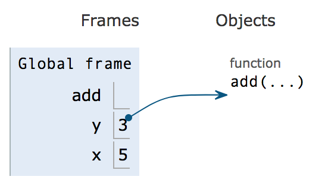

Lab 2 Solutions
Solutions: You can find the file with solutions for all questions here.
Python Tutor Intro
In the last lab, you learned some basic expressions and wrote some python code. In this lab, you will learn about how to understand your code using a useful tool called python tutor. You will also learn about functions, which are bundles of code that perform some action and/or return some value. In the end, you will learn a little bit about text editors, which is where we write and edit code.
Before we formally explain what python tutor is, let’s experiment with it a little. First, head to the python tutor website
Copy and paste this code snippet into the box:
y = 3
x = 5
z = y + x
print(z)Press “visualize execution”
You can press the “forward” and “back” buttons to step forward or backwards in the code. Every time you step forward, python will run that line of code. Notice the legend on the bottom left of the visualizer that tells you what the color of the arrows mean.
You may notice that when you press the forward button for the first time, something pops up on the right side of the screen.

Given the line that you just ran, what do you think this diagram means? Try running a few more lines.
What python tutor is doing is showing you exactly what each variable is and what its value is., It shows you the output of the print statement in the box above the diagram.

What’s the difference between the value that appears in the interpreter after evaluating an expression and the output displayed by a print statement?
The value that appears after evaluating is a feature that only the interpreter has. When you actually run the code from a file, that return value does not get printed. THe print statement actually does print directly to your terminal.
Python tutor is a great tool because it helps you understand exactly what your code is doing and also keeps track of what variables’ values are along the way. If you ever have trouble understanding what your code is doing, or finding a bug, pull up python tutor and step through it!
When we assign variables, python tutor visualizes this with the variable’s name and a box next to it with the variable’s value. This is just what a variable is! Something that can get assigned a value.
The frame is called “global” for a reason. We will explain that later on.
Let’s throw a function in there. Copy and paste this into the python tutor:
from operator import add
y = 3
x = 5
z = add(x,y)
print(z)If you step until step 5, we see that there is something under the “objects” category.

Add is a function, and functions live in object land. We denote which names correspond to which functions with an arrow.
You can think of everything in “frame land” as a box. The box holds something, but is not the thing itself. Some boxes hold integers directly, like the values of x and y in the above image. Other boxes hold more complicated things like functions which cannot be stored directly in the box. Instead, the box holds a pointer to the function which actually lives in object land. In this lab, we are not worried about that, we want you to pay attention to the boxes.
What about floats, booleans, and strings? They also live inside the box, as seen below.

Now that you understand a little bit of how python tutor works, let’s write a function to visualize.
Introducing Functions
First, we will explain what exactly a function is.
Sometimes, we need to use a bundle of code over and over again. For example, converting fahrenheit to celsius! Which you coded in the first lab.
It would be exhausting to have to write
((fahrenheit - 32)*5)/9
Every time we want to convert fahrenheit to celsius.
So, we bundle it up into a function:
# the below line is what we call the “function definition”
# it states the name of the function and its parameters/arguments, which is
# “fahrenheit” # in this case.
# a parameter is something that a function takes in and uses in some way.
def converter(fahrenheit):
return ((fahrenheit - 32)*5)/9Now every time we want to do a conversion, we can call just the converter function:
converter(54)
This is abstraction. We abstract the expression into a convenient function that can be used for any input values.
Call Expressions
A call expression applies a function, which may or may not accept arguments. The call expression evaluates to the function's return value.
The syntax of a function call:
add ( 2 , 3 )
| | |
operator operand operandEvery call expression requires a set of parentheses delimiting its comma-separated operands.
To evaluate a function call:
- Evaluate the operator, and then the operands (from left to right).
- Apply the operator to the operands (the values of the operands).
If an operand is a nested call expression, then these two steps are applied to that operand in order to evaluate it.
Return
Most functions that you define will contain a return statement. The return statement will give the result of some computation back to the caller of the function and exit the function. For example, the function square below takes in a number x and returns its square.
def square(x):
"""
>>> square(4)
16
"""
return x * xFunctions and Python Tutor
Let’s see what function calls look like in the python interpreter.
Paste this code into the interpreter. If you are not in edit mode, click the “edit this code” hyperlink.
def sum(x,y):
z = x + y
return z
x = 3
y = 4
z = sum(x,y)
a = z + 1Now step through the code. Notice in step 5 something interesting happens. A new frame pops up and the execution arrow miraculously moves all the way to the first line. How did we get back there? Think about what would cause this jump before reading the answer below.
When we call the sum function, we need to step through the function itself and execute all of its lines. Where is the function defined? In line 1! Thus, the python interpreter needs to go back there and step through each individual line.

This new frame seen above is a local frame. It is a frame for the sum function that was just called. Everything that happens inside the sum function will be shown inside sum’s local frame.
Step through the rest of the code to see what happens.
Notice that between steps 8 and 9, the function jumps from line 3 to line 6. What’s that all about? Why doesn’t it just go straight to line 4?
Remember how the interpreter had to jump into the sum function to execute it? Well, when it finishes the function, it needs to jump back to the line it was running before the function. That line was line 6.
Now, let’s see what happens if a function calls a function. Copy the following code into python tutor.
def sum(x,y):
z = x + y
return z
def square_sum(x,y):
z = 2
return sum(x, y)**z
x = 3
y = 4
square_sum(x,y)Now press “forward” 2 times.
You may notice that during steps 1 and 2, the visualizer skips over the bodies of the functions. This is because the functions have not been called yet, so the python interpreter will not unpack the function and go into it. It only notes that there are two functions named sum and square_sum, and assigns them to functions living in object land.
Try clicking forward to step 6. In step 6, the interpreter enters the square_sum function. See the new local frame that appeared.

Fun fact: Because the frames are stacked this way, we call the group of frames the call stack.
If you click forward one more time, you’ll see z pop up, which is set to 2. Then, we enter the sum function. Step to step 11.

At this point, you see that we have many variables all names the same thing. How does python know which variable we are referring to when we want the value of “x”? Is it the first, the second, or the third?
This is where scope comes in.
Everything inside a function’s local frame is said to be in its “scope”. A functions scope contains all the variables and functions it can access/manipulate/use.
There are two big categories for scope: local and global.
- Global scope is just whatever lies in the global frame.
- Local scope is the scope of any individual function.
When we are in the sum function, when we ask for z, we will retrieve z in sum’s local frame. When we are in square_sum, we will retrieve the z in square_sum’s local frame.
Let’s continue exploring our function.
After returning from sum, we go back to the line where we called sum: 6. Now that we have the result of sum (7), we can raise it to the power of z, which is 2, and return it.
Now that you’ve seen a bit of defining functions, calling functions, and how both look like when they are visualized in python tutor, we will move on to learning about text editors.
Text Editors
In lab00, we had you download a text editor called sublime. Course staff will be officially supporting sublime this semester. You are free to use a different text editor, but staff may not be able to support you fully in that text editor.
The reason we use text editors is because we cannot write large, complex programs directly in the python interpreter. We need somewhere to save our code so we can reload it later. And, just like any document you write, coding takes editing and revising.
A text editor is something we use to write and edit code. Think of it Microsoft word, except for writing code instead of essays.
You can open a .py file in sublime by right clicking the file, selecting “open with”, and then clicking sublime. Or, you can just open sublime and click file->open….
Let’s try creating a new file in sublime!
- First open sublime, and then click file->newFile. You have now created a file called “untitled”
- Try writing a function called “yay” that takes in a number x and returns “yay” x times.
- Right now your file looks really bland. Let’s add a splash of color. Navigate to file->save as and save the file wherever you’d like with the name “yay.py”.
Now BAM! :D doesn’t it look great?
Now that you have the .py extension, you can actually run the file in the python interpreter. You have also told sublime that you are writing code, which enables sublime to give you that neat color scheme.
You can use sublime to write plain text files as well, just add a .txt extension! But for this class, we will mostly be using sublime for code.
Colors in sublime actually correspond to different things. Strings are light yellow, function names are green, parameters are orange. Try writing a few more lines of code: write some more functions, call them, assign some variables. See what colors sublime assigns to each thing you write. Sublime also has some other pretty neat features. One you’ve probably already noticed is that it tabs automatically for you!
It also has a neat sort of autocomplete feature, where it will give you all variables and functions that have the prefix of whatever you’re typing.

If you have a lot of parentheses in a line, if you put your cursor next to one, it will tell you where the matching parenthesis is.

If you want to edit multiple lines at once, here are some cool shortcuts
ctrl+d: Select the current word and the next same wordctrl+click: Every place you click will create a cursor to editctrl+shift+fANDalt+enter: Find a word in your files and then select them all
We recommend you look up some more features yourself so you can make the most out of your text editor. Learning shortcuts can make writing code much more efficient and fun!
Here is a sublime tutorial you can check out.
Deliverables
Problem 1
def a_or_c(grade):
"""
We all know the saying "C's get degrees".
We all would like to get an A, but sometimes
a C will have to do.
Return whether the grade inputted
would receive an A or C.
>>> a_or_c(100)
True
>>> a_or_c(75)
True
>>> a_or_c(82)
False
>>> a_or_c(80)
False
>>> a_or_c(95)
True
>>> a_or_c(40)
False
"""
#BEGIN SOLUTION ALT=""
return grade > 89 or (grade < 80 and grade > 69)
#END SOLUTIONUse OK to test your code:
python3 ok -q a_or_c --localProblem 2
def min(x, y):
"""
Return the minimum between x and y
>>> min(1,2)
1
>>> min(3,1)
1
>>> min(2,3)
2
>>> min(0, 67777)
0
>>> min(-1, -5)
-5
>>> min(-7, -1)
-7
>>> min(0, 0)
0
"""
#BEGIN SOLUTION ALT=""
if x < y:
return x
return y
#END SOLUTIONUse OK to test your code:
python3 ok -q min --localProblem 3
def abs_value_equal(x, y):
"""Return whether or not the absolute value of both numbers is the same.
Please refrain from using libraries (abs)
>>> abs_value_equal(-2, -2)
True
>>> abs_value_equal(-3, 3)
True
>>> abs_value_equal(1, 2)
False
>>> abs_value_equal(3, 3)
True
>>> abs_value_equal(-6, -6)
True
>>> abs_value_equal(-1, -5)
False
>>> abs_value_equal(5, -6)
False
"""
#BEGIN SOLUTION ALT=""
if x < 0:
x = x * -1
if y < 0:
y = y * -1
return x == y
#END SOLUTIONUse OK to test your code:
python3 ok -q abs_value_equal --localProblem 4
def mirror(num1, num2):
"""
Return if num1 is num2 backwards
The inputs will always be < 100.
>>> mirror(12, 21)
True
>>> mirror(54, 45)
True
>>> mirror(33, 33)
True
>>> mirror(42, 52)
False
>>> mirror(12, 22)
False
"""
#BEGIN SOLUTION ALT=""
first = num1 % 10 == num2 //10
second = num1 //10 == num2 % 10
return first and second
#END SOLUTIONUse OK to test your code:
python3 ok -q mirror --localExtra: Return and Print (confusing)
When Python executes a return statement, the function terminates immediately. If Python reaches the end of the function body without executing a return statement, it will automatically return None.
In contrast, the print function is used to display values in the Terminal. This can lead to some confusion between print and return because calling a function in the Python interpreter will also print out the function's return value to the terminal. However, unlike a return statement, when Python evaluates a print expression, the function does not terminate immediately.
def what_prints():
print('Hello World!')
return 'Exiting this function.'
print('CS88 is awesome!')
>>> what_prints()
Hello World!
'Exiting this function.'